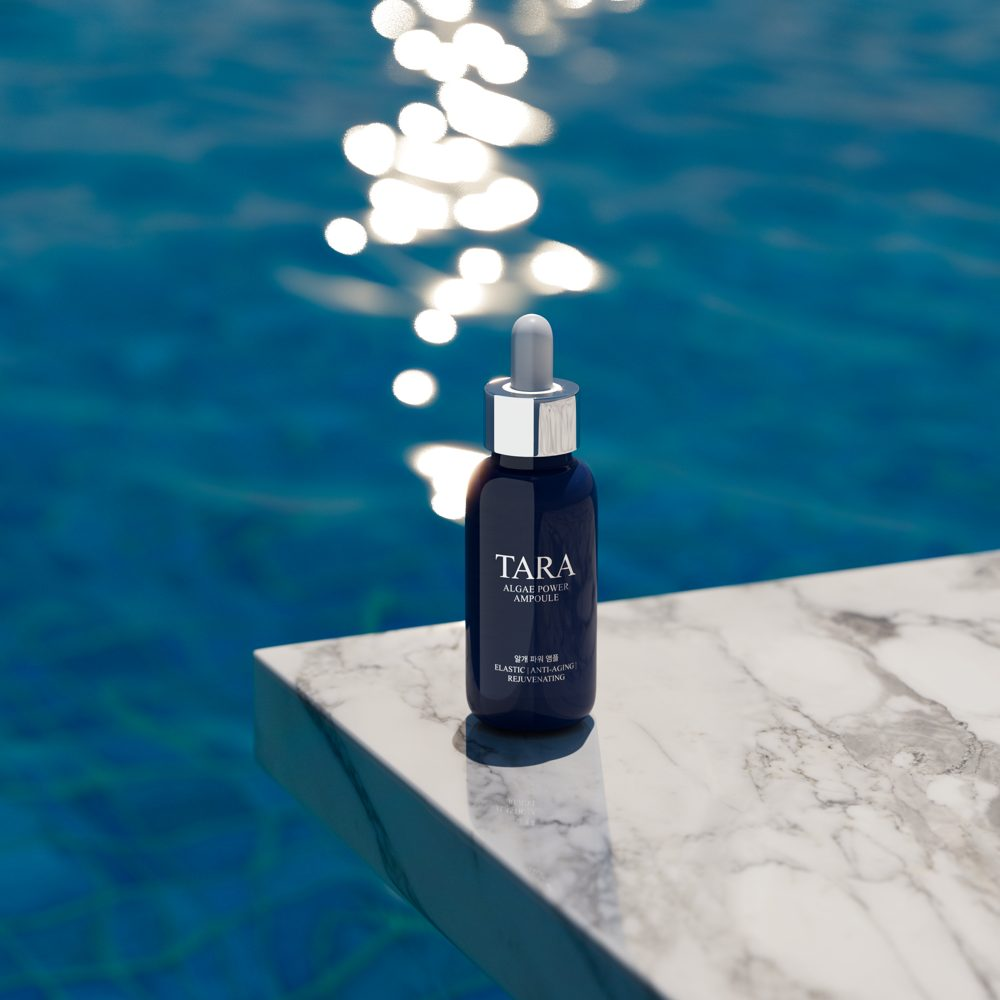

Ingredients
Seaweed and algae in skincare: what they do
Marine ingredients are a big part of Korean skincare, and they're the base of every TARA formula. Here's a plain guide to the ones on our labels.

Spirulina
A blue-green microalga that's naturally rich in nutrients. In skincare it's used in hydrating formulas. Our sheet mask is soaked in a spirulina ampoule.
Undaria Pinnatifida (wakame)
The seaweed many people know from miso soup. It's used for hydration and is in our toner, lotion and ampoule.
Fucoidan
A compound found in brown seaweeds. Our toner and lotion use hydrolyzed fucoidan alongside sea algae.
Ecklonia Cava, Laminaria Japonica and Hizikia Fusiforme
Three more brown seaweeds, all rich in antioxidants. Together with wakame they make up the four seaweed extracts in the Algae Power Ampoule.
Deep sea water
Water drawn from deep in the ocean, naturally rich in minerals. It's in the sheet mask and the Caviar Power Cream.
Marine collagen
Collagen sourced from the sea, used to keep skin feeling replenished. It buffers the acids in our BHA peel pads.
Caviar
Caviar is naturally rich in omega-3 and omega-6 fatty acids. Our Caviar Power Cream uses caviar oil fermented for 150 hours, and the eye cream uses fermented caviar extract.
TARA has been featured in Vogue Korea, Allure Korea and Cosmopolitan Korea.